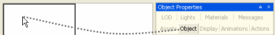
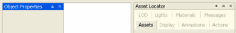
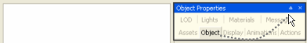
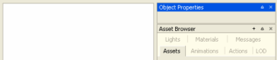
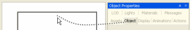
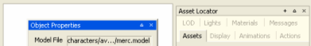
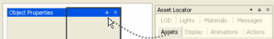
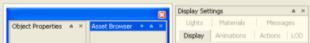
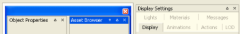

Table of Contents
BigWorld tools such as WorldEditor, ModelEditor and ParticleEditor, give the user the ability to change the layout of the application's different panels using the Panel System.
The Panel System allows the user to have different parts of the application in different positions in the screen, as a tab or as a panel.
The picture below illustrates the basic elements of the system (fields are blurred to highlight the relevant items):
A window (left), a floating panel (middle), and two docked panels (right)
The panels can be manipulated in two ways:
-
via the title bar buttons
-
via drag-and-drop
The panels might be manipulated by the following buttons:
-
Create New Floating Panel button
-
Expand / collapse button /
-
Close button
Most of the manipulation can be done via drag-and-drop, with grey rectangles indicating the area where the dragged area will be fit.
Note
Pressing Ctrl makes the panel system ignore dockable areas.
-
To create a docked panel on an area of the viewport
Drag the desired tab or panel, and drop it near the top, bottom, left, or right of the viewport.
Before dragging the tab to the left side of the viewport
After dragging the tab to the left side of the viewport — New docked panel created
-
To create a new docked panel inside another docked panel
Drag the desired tab or panel, and drop it near the panel's title bar — if the drop happens inside the title bar, then a new tab is created.
Before dragging the tab near the panel's title bar
After dragging the tab near the panel's title bar — New docked panel created
-
To create a new floating panel
Drag the desired tab or panel, and drop it in the viewport.
Before dragging the tab to the viewport
After dragging the tab to the viewport — New floating panel created
-
To create a new window
Drag the desired tab or panel, and drop it inside a floating panel, near its title bar — if the drop happens inside the title bar, then a new tab is created.
Before dragging the tab near the floating panel's title bar
After dragging the tab near the floating panel's title bar — New window created
-
To create a new panel
Drag the desired tab or panel, and drop it near an existing tab or panel's title bar — if the drop happens near the title bar, then a new panel is created.

Before dragging the tab inside the panel's title bar
After dragging the tab inside the panel's title bar — New tab created
Upon exit, panel layouts are automatically saved to the layout.xml file inside the tool's application folder. Upon startup, the last panel layout is reloaded. If the layout file does not exist, then the tool will load its default panel layout. Please note that the layout.xml file should not be edited manually.
In all tools, the user has the option to load the tool's default panel layout, or reload the last customised layout.
For details on the menu items related to the Panel System, see:
-
WorldEditor's menu items in Menu items
-
ModelEditor's menu items in Menu items
-
ParticleEditor's menu items in Menu items